Capstone: a sampling decision under uncertainty in the Cerrado
Six edaphos pillars combined in a causally framed field campaign
Hugo Rodrigues
Source:vignettes/capstone-cerrado-campaign.Rmd
capstone-cerrado-campaign.RmdScenario. A pedometrics team is planning a field campaign in the Brazilian Cerrado to validate a high-resolution map of soil organic carbon (SOC). The budget covers exactly eight additional cores. The central decision is: which eight locations give the largest expected reduction in uncertainty, and why?
This vignette walks through how six of the
edaphospillars feed into that decision, and marks the places where the evidence they provide is weak or where the bundle holds a stand-in rather than a real result.
library(edaphos)
library(ggplot2)
library(dplyr)
theme_set(theme_bw(base_size = 11))
set.seed(20260423L)
# Results pre-computed by data-raw/capstone_campaign_run.R.
# We load the bundle to avoid long training times when building the
# vignettes.
res_path <- system.file("extdata", "capstone_campaign_results.rds",
package = "edaphos")
stopifnot(nzchar(res_path), file.exists(res_path))
R <- readRDS(res_path)
# Native calibration: each pillar evaluated in its own domain, not forced
# onto one shared map query.
nat_path <- system.file("extdata", "capstone_native_calibration.rds",
package = "edaphos")
N <- if (nzchar(nat_path) && file.exists(nat_path))
readRDS(nat_path) else NULL
# Metadata of the Pillar 3 run (months, grid, ensemble size), quoted in the
# Pillar 3 section.
t3_path <- system.file("extdata", "temporal_cerrado_results.rds",
package = "edaphos")
stopifnot(nzchar(t3_path), file.exists(t3_path))
T3 <- readRDS(t3_path)Scientific motivation: can digital soil mapping be causal?
Zhang and Wadoux (2026) raise a basic question for modern pedometrics: can digital soil mapping (DSM) models support causal interpretation? The dominant practice in DSM studies is to read the relative importance of covariates as a proxy for pedogenetic processes, which carries an implicit causal premise that is seldom stated and even more seldom justified.
The authors distinguish two views of causality:
| View | Core logic | Limitation in DSM |
|---|---|---|
| Successionist | Regularities and associations recur → we infer a cause | Spurious associations, Simpson’s paradox, no temporal sequence |
| Generative | Pedogenetic factors act through explicit processes → they generate soil properties | Requires the mechanisms to be specified (but opens the door to formal causal inference) |
The generative view, summarised in the conceptual equation of Zhang and Wadoux (2026),
$$\text{pedogenetic factors} \xrightarrow{\text{processes}} \text{soil} \tag{1}$$
extends the classic model of McBratney et al.
(2003) and fits Pillar
2 of edaphos, where an explicit pedogenetic ODE
represents how organic matter changes with depth.
Zhang and Wadoux (2026) state three conditions for causal inference from observational data:
- An explicit causal model (DAG): built in Pillar 1 from expert knowledge, with a knowledge graph extracted by an LLM from the literature as a cross-check.
- Causal sufficiency (no latent confounders): addressed only in part. LLM extraction from the literature (Pillar 1) can surface omitted variables, and the explicit processes of Pillar 2 constrain the model, but neither rules out latent confounders, which is why the Pillar 1 table reports robustness values.
- Compatibility / faithfulness between the structural model and the data: the pedogenetic ODE restricts the profile shapes that count as physically plausible.
The design.
edaphosis built around this generative architecture: each pillar contributes one component, none of which satisfies the three conditions on its own. The sections below show what each one contributes to this campaign.
Conceptual map: the six pillars as one pipeline
The diagram below shows how the six pillars connect in this campaign.

Pipeline of the six edaphos pillars for the Cerrado sampling decision. Each node is a pillar; the edges show the flow of information. The unified edaphos_posterior API connects every branch to the final diagnostic.
Study area and data
Candidate grid in the Cerrado
The candidate grid has 10 × 10 points spaced 0.222° apart, spanning -50° to -48° longitude and -16° to -14° latitude.
The grid’s covariates are simulated.
data-raw/capstone_campaign_run.R draws MAP, T2M, NDVI and
SOC for each cell at random, and the clay, sand and slope of the
candidates as well. Everything computed on the grid (the Pillar
4 map, the Pillar 5 scores, the Pillar 6 uncertainty) therefore
illustrates the workflow, not the Cerrado. The profile-level analyses
(the Pillar 1 associations, the Pillar 2 pedon, the native calibration)
use real WoSIS profiles.
aoi <- R$aoi
knitr::kable(
head(aoi, 8),
digits = 3,
caption = paste0("First 8 cells of the 10 × 10 grid (lon/lat in decimal ",
"degrees). All other columns are simulated values, not ",
"observations."),
col.names = c("Lon", "Lat", "MAP (mm/yr)", "T2M (°C)", "Mean NDVI",
"SOC (g/kg, simulated)")
)| Lon | Lat | MAP (mm/yr) | T2M (°C) | Mean NDVI | SOC (g/kg, simulated) |
|---|---|---|---|---|---|
| -50.000 | -16 | 1158.555 | 25.434 | 0.516 | 16.091 |
| -49.778 | -16 | 1353.273 | 23.969 | 0.358 | 16.107 |
| -49.556 | -16 | 1605.812 | 22.934 | 0.825 | 23.306 |
| -49.333 | -16 | 1116.532 | 22.151 | 0.506 | 6.687 |
| -49.111 | -16 | 1305.555 | 21.948 | 0.364 | 22.393 |
| -48.889 | -16 | 1343.836 | 27.186 | 0.526 | 22.743 |
| -48.667 | -16 | 1447.432 | 25.192 | 0.465 | 19.169 |
| -48.444 | -16 | 1276.854 | 27.116 | 0.438 | 23.527 |
WoSIS profiles
# The real WoSIS profiles no longer ship with the package: they were
# third-party measurements with coordinates. Fetch them yourself if you
# want this summary.
cat("The WoSIS profiles of the AoI are not distributed with the package.\n")
#> The WoSIS profiles of the AoI are not distributed with the package.The SOC histogram of the WoSIS profiles is not reproduced here. It summarised third-party measurements that this package no longer distributes.
Pillar 1 — Causal structure from a DAG and an LLM
Why do we need a DAG?
Zhang and Wadoux (2026) show that the common practice of reading variable importance in DSM models as causal evidence is vulnerable to Simpson’s paradox: the temperature–SOC relationship can reverse sign when we stratify by vegetation (Figure 1 of their article). The reversal occurs because vegetation is a confounder: it influences both local temperature and the input of organic material. Backdoor adjustment (Pearl 2009), conditioning on a set of covariates that blocks every non-causal path, is the standard remedy.
Pillar 1 of edaphos addresses condition
1 of Zhang and Wadoux (2026) (an explicit causal model):
the DAG is built from the pedological knowledge accumulated in the
literature, and an LLM served through Ollama (llama3.1:8b for this
bundle) extracts causal claims from abstracts to compare against it.
Edge extraction with an LLM (LLM KG)
# Run offline (requires Ollama with the model pulled). This is an
# illustrative call on one hand-written passage. The claims stored in
# R$llm_claims were extracted from the abstracts in cerrado_abstracts.jsonl,
# with the model recorded in R$llm_provenance$model.
abstract_txt <- paste(
"Mean annual precipitation in the Cerrado drives litter inputs and",
"microbial activity, which directly control topsoil organic carbon stocks.",
"Tree cover mediates this effect by increasing litter quality.",
"Temperature accelerates decomposition, reducing SOC accumulation."
)
claims <- causal_llm_extract(
text = abstract_txt,
backend = "ollama",
model = "gemma4:latest"
)
claims <- R$llm_claims
prov <- R$llm_provenance
if (is.null(claims)) {
cat("The extraction was not run in this build: ",
prov$reason, ". The table is omitted rather than replaced by ",
"hand-typed rows: a fabricated table that looks like an extraction is ",
"exactly the defect this section corrects.\n", sep = "")
} else {
.cf <- sort(unique(claims$confidence))
knitr::kable(
utils::head(claims[, c("cause", "effect", "confidence")], 12),
digits = 2,
caption = paste0(
"A sample of the ", nrow(claims), " causal edges extracted from the ",
prov$n_abstracts, " real Cerrado abstracts shipped in ",
"`cerrado_abstracts.jsonl`, via `causal_llm_extract(backend = \"ollama\", ",
"model = \"", prov$model, "\")`. The model uses only ",
length(.cf), " distinct confidence values (",
paste(format(.cf, digits = 2), collapse = ", "), ") across the ",
nrow(claims), " edges, so the confidence gives a coarse ordering and ",
"does not discriminate between individual edges."
)
)
}| cause | effect | confidence |
|---|---|---|
| mean_annual_precipitation | soc | 0.9 |
| mean_annual_precipitation | above_ground_biomass_input | 0.8 |
| seasonal_moisture_regulation | decomposition | 0.7 |
| elevation | soc | 0.5 |
| parent_material | clay_content_bt_horizon | 0.9 |
| time_since_parent_material_exposure | primary_mineral_dissolution_rate | 0.8 |
| temperature | primary_mineral_dissolution_rate | 0.8 |
| clay_content_bt_horizon | cec_effective | 0.9 |
| slope_angle | local_drainage | 0.9 |
| twi | surface_layer_soil_moisture | 0.8 |
| twi | bulk_density | 0.8 |
| twi | soc_retention | 0.7 |
Many of the 35 extracted claims name processes, such as decomposition, primary-mineral dissolution, effective cation exchange capacity or surface soil moisture, that have no counterpart among the 11 nodes of the DAG, so they cannot enter the adjustment-set computation. The bottleneck is not the extractor; it is the set of observed covariates. The LLM’s knowledge graph widens the causal vocabulary well beyond what 10 covariates can identify.
The bundle’s llm_edges field labels 2 edges as LLM-added
(wc_landcover_trees -> soc_topsoil_gkg, soilgrids_clay ->
soc_topsoil_gkg). These are written into
data-raw/capstone_campaign_run.R by hand, not derived from
the extracted claims, and every one of them is already an edge of the
expert DAG. The extraction therefore did not change the DAG used
below.
The causal DAG
dag <- R$dag
if (requireNamespace("ggdag", quietly = TRUE) &&
requireNamespace("dagitty", quietly = TRUE)) {
# Edges by origin (base vs LLM), kept for reference
base_edges <- R$dag_info$base_edges
llm_edges <- R$dag_info$llm_edges
ggdag::ggdag(dag, layout = "sugiyama", text_size = 2.6,
node_size = 8) +
ggdag::theme_dag_blank() +
labs(title = "Cerrado causal DAG",
caption = paste0("Nodes: ", R$dag_info$n_nodes,
" | Edges: ", R$dag_info$n_edges))
} else {
edges_df <- R$dag_info$edges_df
cat("Install `ggdag` to draw the DAG.\n\n")
cat("DAG edges:\n")
cat(paste(edges_df$from, "->", edges_df$to, collapse = "\n"), "\n")
}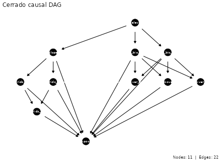
The Cerrado causal DAG used for the backdoor adjustments below (11 nodes, 22 edges). Edges are not coloured by origin.
Adjusted associations (backdoor adjustment)
For each exposure of interest (MAP (mm/yr), Tree cover (%), Clay (%)), we compute the minimal adjustment set by the backdoor criterion and fit a linear estimator with a spatial block bootstrap (k-means on lon/lat).
eff <- R$causal_effects
eff$exposure <- to_en(eff$exposure)
knitr::kable(
eff[, c("exposure", "estimate", "ci_lo", "ci_hi", "RV", "adjustment")],
digits = 3,
col.names = c("Exposure", "Adjusted association", "CI 2.5%", "CI 97.5%",
"RV", "Backdoor adjustment set"),
caption = paste0(
"Backdoor-adjusted associations in the Cerrado DAG (LM estimator, ",
"spatial block bootstrap with B = ", paste(B_boot, collapse = "/"),
" on real WoSIS profiles). Following ",
"Zhang & Wadoux (2026), we report adjusted associations, not identified ",
"causal effects, each with the Cinelli–Hazlett robustness value (RV): ",
"the fraction of residual variance that an unobserved confounder would ",
"have to explain in both exposure and outcome to bring the estimate to zero."
)
)| Exposure | Adjusted association | CI 2.5% | CI 97.5% | RV | Backdoor adjustment set |
|---|---|---|---|---|---|
| MAP (mm/yr) | 0.002 | -0.008 | 0.014 | 0.019 | slope, wc_bio_01, wc_landcover_cropland, wc_landcover_grassland, wc_landcover_trees |
| Tree cover (%) | 2.975 | -2.019 | 12.174 | 0.048 | wc_bio_01, wc_bio_12 |
| Clay (%) | -0.097 | -0.858 | 0.394 | 0.019 | slope, soilgrids_bdod, soilgrids_sand |
post_list <- R$causal_posteriors
# Build a data.frame of draws for ggplot
draws_df <- bind_rows(lapply(names(post_list), function(nm) {
s <- as.numeric(post_list[[nm]]$samples)
data.frame(exposure = to_en(nm), draw = s, stringsAsFactors = FALSE)
}))
eff_pts <- setNames(eff$estimate, eff$exposure)
ggplot(draws_df, aes(x = draw, fill = exposure)) +
geom_density(alpha = 0.55, color = NA) +
geom_vline(
data = data.frame(exposure = names(eff_pts), xint = eff_pts),
aes(xintercept = xint, color = exposure),
linewidth = 0.9, linetype = "solid"
) +
geom_vline(xintercept = 0, linetype = "dashed", color = "grey40") +
facet_wrap(~exposure, scales = "free", ncol = 1) +
scale_fill_brewer(palette = "Set2", guide = "none") +
scale_color_brewer(palette = "Set2", guide = "none") +
labs(
x = "Adjusted association (g/kg per unit of the exposure)",
y = "Density",
title = "Pillar 1 — bootstrap distributions of the adjusted associations"
)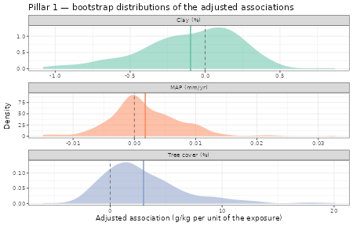
Block-bootstrap distributions (B = 300) of the adjusted associations. Solid vertical line: point estimate. Dashed line: zero.
Reading the table in the light of Zhang and Wadoux (2026). These are adjusted associations, not identified causal effects, and the table is read through its robustness values as much as through its signs. In this bundle, all 3 95 % intervals contain zero, and the robustness values run from 0.019 to 0.048: a confounder explaining 4.8 % of the residual variance of both exposure and outcome would be enough to bring even the most robust estimate to zero. None of the three associations can carry a causal reading on its own. The generative causal claim proper does not come from here; it comes from Pillar 2, whose pedogenetic ODE models the processes explicitly, and that is where Zhang and Wadoux (2026) place causal inference in DSM.
Pillar 2 — Physical pedogenesis: the generative model
Pedogenetic ODE
Pillar 2 implements the generative view of Zhang and Wadoux (2026) directly: the SOC content along the profile is governed by an ODE whose decay rate weakens with depth,
where is SOC (g/kg), is depth (cm), is the decay rate at the surface and is the depth attenuation of that rate. Because the rate decays with depth, the profile closes only the fraction , with , of the gap between and , and levels off at (see the table below). In the framing of Zhang and Wadoux (2026), specifying the mechanism this way fixes the processes by the modeller’s design, which gives a structured means of controlling confounding.
The Bayesian fit (piml_profile_fit_bayesian, four-chain
MCMC) propagates parameter uncertainty to the predicted profile. The
reported path is no longer the Laplace approximation: on this pedon the
Laplace intervals are more than 10 % narrower than the MCMC ones for 5
of the 7 parameters, the observation-noise interval by a factor of 1.81,
because the approximation is Gaussian in log coordinates and so has
tails that are too light.
# Profile data and Bayesian posterior (pre-computed).
# The real pedon's observations were removed from the package; the
# pre-computed posterior remains, so the curve and the bands are still
# correct -- only the observed points are no longer drawn.
prof_post <- R$piml_profile_posterior # edaphos_posterior
# The depth grid comes from the bundle, not from an assumption about it: the
# pedon is now a real WoSIS profile reaching 550 cm, and a hard-coded
# seq(0, 100, by = 2) silently mismatched the posterior's 120 columns.
depths_seq <- R$piml_profile_depths
draws_mat <- prof_post$samples # (n_draws, n_depths)
stopifnot(length(depths_seq) == ncol(draws_mat))
q05 <- apply(draws_mat, 2, quantile, 0.05)
q25 <- apply(draws_mat, 2, quantile, 0.25)
q50 <- apply(draws_mat, 2, quantile, 0.50)
q75 <- apply(draws_mat, 2, quantile, 0.75)
q95 <- apply(draws_mat, 2, quantile, 0.95)
pred_df <- data.frame(
depth = depths_seq,
q05 = q05, q25 = q25, q50 = q50, q75 = q75, q95 = q95
)
ggplot(pred_df, aes(x = q50, y = -depth)) +
geom_ribbon(aes(xmin = q05, xmax = q95), fill = "#2ECC71", alpha = 0.20) +
geom_ribbon(aes(xmin = q25, xmax = q75), fill = "#27AE60", alpha = 0.35) +
geom_line(color = "#1A5C35", linewidth = 1.1) +
labs(
x = "SOC (g/kg)",
y = "Depth (cm)",
title = "Pillar 2 — Bayesian posterior of the pedogenetic ODE",
caption = paste0(
"Posterior parameters: lambda0 = ", signif(R$piml_params$lambda0, 3),
" mu = ", signif(R$piml_params$mu, 3),
" y0 = ", signif(R$piml_params$y0, 3),
" y(inf) = ", signif(R$piml_params$y_asym, 3)
)
) +
scale_y_continuous(breaks = -pretty(c(0, max(depths_seq)), 5),
labels = pretty(c(0, max(depths_seq)), 5))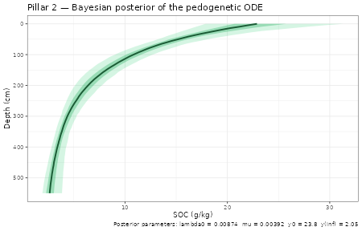
Bayesian predictive profile of the pedogenetic ODE for one Cerrado pedon. Solid line: posterior median. Dark band: 50% interval. Light band: 90% interval. The WoSIS observations that fitted this posterior are not shipped with the package and so are not drawn.
Learned pedogenetic parameters
# Columns selected by NAME, not by position: the table gained the
# diagnostic columns `rhat` and `ess` when the reported path moved to
# MCMC, and a fixed-length `col.names` silently broke the vignette until
# the build caught it.
.pt <- R$piml_params_table
.cols <- c("param", "meaning", "mean", "sd", "ci_lo", "ci_hi", "rhat", "ess")
.cols <- .cols[.cols %in% names(.pt)]
.lab <- c(param = "Parameter", meaning = "Physical meaning",
mean = "Posterior mean", sd = "Posterior SD",
ci_lo = "CI 2.5%", ci_hi = "CI 97.5%",
rhat = "R-hat", ess = "ESS")
knitr::kable(
.pt[, .cols, drop = FALSE],
digits = 4,
col.names = unname(.lab[.cols]),
caption = paste0(
"Parameters of the pedogenetic ODE dy/dz = -lambda0 * exp(-mu*z) * (y - y_inf), ",
"estimated by four-chain MCMC on the pedon's horizons. The ",
"intervals are true posterior quantiles; R-hat and the effective sample ",
"size (ESS) are the convergence diagnostics of the fit itself. ",
"y_inf is NOT the asymptote: because ",
"the rate decays with depth, the profile covers only 1-exp(-kappa) ",
"of the interval y0 -> y_inf and levels off at y_asym. y_inf is negative and ",
"not identified, whereas y_asym, the value ",
"the profile actually reaches, is positive and identified."
)
)| Parameter | Physical meaning | Posterior mean | Posterior SD | CI 2.5% | CI 97.5% | R-hat | ESS |
|---|---|---|---|---|---|---|---|
| lambda0 | Surface decay rate of the pedogenetic ODE (cm^-1) | 0.0087 | 0.0042 | 0.0020 | 0.0190 | 1.0066 | 760.3409 |
| mu | Depth attenuation of that rate (cm^-1) | 0.0039 | 0.0026 | 0.0004 | 0.0100 | 1.0050 | 894.1020 |
| y_inf | Equilibrium coordinate of the ODE, not attained (g/kg) | -5.2912 | 16.3261 | -52.0747 | 3.5183 | 1.0037 | 1308.8497 |
| y0 | Fitted surface soil organic carbon (g/kg) | 23.8413 | 4.5278 | 17.2075 | 35.1113 | 1.0062 | 1340.0424 |
| kappa | Total relaxation lambda0/mu; fraction of gap closed = 1-exp(-kappa) | 4.3052 | 7.2073 | 0.3271 | 20.1474 | 1.0066 | 760.3409 |
| y_asym | Attainable deep soil organic carbon, y(Inf) (g/kg) | 2.0481 | 0.9523 | 0.4168 | 3.9900 | 1.0037 | 1308.8497 |
| sigma | NA | 0.2297 | 0.0745 | 0.1309 | 0.4144 | 1.0025 | 1039.2173 |
Link between Pillars 1 and 2. The fitted ODE above
is not what screens the sampling candidates in Pillar 5. That gate is a
fixed closed-form expression for topsoil SOC in MAP and tree cover,
written into data-raw/capstone_campaign_run.R; it does not
use this posterior or the Pillar 1 DAG.
Pillar 3 — Spatio-temporal dynamics (ConvLSTM + EnKF)
The Cerrado 4D cube
Pillar 3 works on a 4D cube of 168 monthly fields (January 2010 to December 2023) of NDVI (MOD13Q1, 250 m) and climate variables (NASA POWER precipitation and T2M) on its own 10 × 10 grid. That grid is not the candidate grid of this campaign.
Zhang and Wadoux (2026) point out that conventional
DSM captures snapshots with no clear temporal sequence, which
makes it impossible to infer which variable precedes which. Pillar 3
responds to that criticism: the ConvLSTM learns the spatio-temporal
dynamics of NDVI, and the EnKF assimilates point observations into the
forecast. In this run the forecast is for December 2023, and the 8
assimilated observations are synthetic: the observed NDVI at randomly
chosen cells plus Gaussian noise
(data-raw/temporal_cerrado_run.R). The field is NDVI in
z-units, not SOC.
# Pre-computed temporal Cerrado results
temp_res <- R$temporal_results
prior_field <- temp_res$prior_mean
analysis_field <- temp_res$analysis_mean
obs_locs <- temp_res$obs_locations
n_cells <- length(prior_field)
lon_seq <- seq(-50, -48, length.out = 10)
lat_seq <- seq(-16, -14, length.out = 10)
grid_df <- expand.grid(lon = lon_seq, lat = lat_seq)
plot_df <- data.frame(
lon = grid_df$lon,
lat = grid_df$lat,
prior = as.numeric(prior_field),
analysis = as.numeric(analysis_field)
) |>
tidyr::pivot_longer(c(prior, analysis),
names_to = "field",
values_to = "ndvi_z")
plot_df$field <- factor(plot_df$field,
levels = c("prior", "analysis"),
labels = c("Prior (ConvLSTM)",
"Analysis (EnKF)"))
ggplot(plot_df, aes(x = lon, y = lat, fill = ndvi_z)) +
geom_tile() +
geom_point(
data = obs_locs,
aes(x = lon, y = lat, fill = NULL),
color = "white", shape = 4, size = 3, stroke = 1.2
) +
facet_wrap(~field) +
scale_fill_viridis_c(option = "D", name = "NDVI\n(z)") +
labs(
x = "Longitude",
y = "Latitude",
title = "Pillar 3 — EnKF assimilation (Gaspari-Cohn, radius = 2 cells)",
caption = paste0(
"Prior RMSE: ", round(temp_res$prior_rmse, 3),
" | Analysis RMSE: ", round(temp_res$analysis_rmse, 3),
" | Reduction: ",
round((1 - temp_res$analysis_rmse / temp_res$prior_rmse) * 100, 1),
"%"
)
) +
theme(legend.position = "right")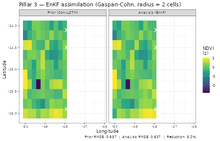
Prior forecast (ConvLSTM, K = 10 ensemble members) and analysis after the localised EnKF (Gaspari-Cohn, radius = 2 cells) for the mean NDVI field (z-units) at the target month. Assimilation lowers the RMSE by 3.2%. The tiles are drawn on the campaign grid’s coordinates because the cube’s own coordinates are not shipped; the observation markers use the cube’s coordinates, so they do not line up with the tiles.
# `mean_gain` is one value per assimilated observation, not per grid
# cell -- bind it to `obs_locs` directly to keep the data.frame
# rectangular.
gain_df <- cbind(obs_locs,
gain = as.numeric(temp_res$mean_gain))
ggplot(gain_df, aes(x = lon, y = lat, color = gain)) +
geom_point(size = 5, shape = 19) +
scale_color_viridis_c(option = "C", name = "Kalman\ngain") +
coord_fixed() +
labs(
x = "Longitude",
y = "Latitude",
title = "Pillar 3 — Kalman gain (Gaspari-Cohn localisation)"
)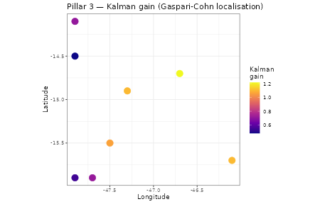
Mean Kalman gain at each of the 8 assimilated observations (cube coordinates). A higher gain means the analysis moved further toward that observation.
Operational reading. Observations with a high Kalman gain are the ones that correct the forecast most. The decision matrix at the end of this vignette carries these eight gains in a column, but they belong to the cube’s observation cells, not to the candidate sites (see the caption of that table).
Pillar 4 — Landscape representation (foundation model)
SimCLR/MoCo encoder on Cerrado patches
Pillar 4 pre-trains an encoder by contrastive learning (SimCLR/MoCo) that maps satellite-image patches to embedding vectors, and fine-tunes an ensemble of prediction heads on those embeddings; the spread between heads gives an epistemic uncertainty.
The map in this bundle does not come from that
encoder. data-raw/capstone_campaign_run.R
generates it as a stand-in: the mean is a linear function of the grid’s
simulated covariates plus Gaussian noise, and the SD is drawn at random.
The two figures below show that stand-in to illustrate the interface;
they carry no information about the Cerrado. The native calibration
section evaluates an ensemble of heads on real WoSIS profiles.
found_df <- R$foundation_pred_df # columns: lon, lat, mean_pred, sd_pred
ggplot(found_df, aes(x = lon, y = lat)) +
geom_tile(aes(fill = mean_pred)) +
scale_fill_viridis_c(option = "B", name = "Pred. SOC\n(g/kg)") +
scale_color_distiller(
palette = "YlOrRd", direction = 1,
name = "Obs. SOC\n(g/kg)"
) +
labs(
x = "Longitude",
y = "Latitude",
title = "Pillar 4 — foundation-model ensemble (synthetic stand-in)"
)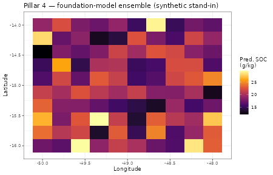
Pillar 4 stand-in map of predicted SOC (synthetic; see the text). The observed WoSIS profiles are not distributed with the package and so do not appear.
ggplot(found_df, aes(x = lon, y = lat, fill = sd_pred)) +
geom_tile() +
scale_fill_viridis_c(option = "F", name = "SD (g/kg)",
direction = -1) +
labs(
x = "Longitude",
y = "Latitude",
title = "Pillar 4 — epistemic uncertainty (synthetic stand-in)"
)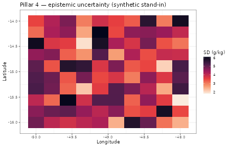
Pillar 4 stand-in epistemic uncertainty (between-member SD). In this bundle the SD is drawn at random, so its spatial pattern carries no information.
Pillar 5 — Active sampling: where to go?
Hybrid policy: uncertainty + diversity + physical gate
Pillar 5 implements an active-sampling policy that combines:
- QRF uncertainty: the width of the prediction interval (10–90 % quantiles).
- Diversity in covariate space: the minimum distance to the existing profiles and to the candidates already selected in the current batch.
-
A physical gate: candidates whose screening value
of topsoil SOC falls outside a plausible range are excluded. In this
campaign the screening value is the fixed closed-form expression
described under Pillar 2, and the accepted range is 1.5 to 100 g/kg
(
data-raw/capstone_campaign_run.R).
The score function is:
where is the normalised uncertainty and the normalised diversity, with by default.
query_res <- R$al_query_results
cat(sprintf(
"Candidates evaluated: %d | Rejected by the physical gate: %d |",
query_res$n_candidates, query_res$n_rejected
), "\n")
#> Candidates evaluated: 100 | Rejected by the physical gate: 0 |
cat(sprintf(
"Selected (batch): %d | Maximum score: %.3f\n",
query_res$n_selected, query_res$max_score
))
#> Selected (batch): 8 | Maximum score: 0.910
cand_df <- R$candidate_df # lon, lat, score, selected, rejected_by_gate
sel_df <- cand_df[cand_df$selected, ]
rej_df <- cand_df[cand_df$rejected_by_gate, ]
ggplot(cand_df, aes(x = lon, y = lat)) +
geom_tile(aes(fill = score)) +
scale_fill_viridis_c(option = "A", name = "AL score",
direction = -1, alpha = 0.8) +
geom_point(data = rej_df, aes(x = lon, y = lat),
color = "black", size = 2, shape = 4, stroke = 1) +
geom_point(data = sel_df, aes(x = lon, y = lat),
color = "#E74C3C", size = 5, shape = 8, stroke = 2) +
labs(
x = "Longitude",
y = "Latitude",
title = paste0("Pillar 5 — active learning: ", query_res$n_selected,
" sites selected for the field"),
caption = paste0(
"★ = selected ✕ = rejected by the physical gate"
)
)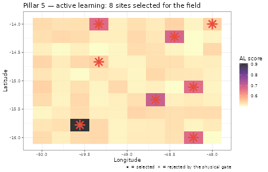
Locations selected by the active-sampling policy (red stars). The background colour is the combined uncertainty + diversity score. Black crosses mark candidates rejected by the physical gate; in this run it rejected 0 of 100. The existing WoSIS profiles are not distributed with the package.
# The bundle's `pred_sd` column is not shown: data-raw/capstone_campaign_run.R
# fills it with random draws, so it is not a model output.
knitr::kable(
sel_df[, c("lon", "lat", "score", "uncertainty_score",
"diversity_score", "pred_mean")],
digits = 3,
col.names = c("Lon", "Lat", "Total score", "Uncertainty",
"Diversity", "Gate screening SOC (g/kg)"),
caption = paste0(
"The ", nrow(sel_df), " locations recommended for field sampling, in ",
"grid order. Uncertainty and diversity are the normalised components ",
"of the score; the last column is the value of the gate's screening ",
"expression, not a model prediction."
)
)| Lon | Lat | Total score | Uncertainty | Diversity | Gate screening SOC (g/kg) | |
|---|---|---|---|---|---|---|
| 9 | -48.222 | -16.000 | 0.672 | 0.960 | 0.623 | 13.427 |
| 13 | -49.556 | -15.778 | 0.910 | 0.951 | 0.812 | 13.362 |
| 37 | -48.667 | -15.333 | 0.700 | 1.000 | 0.478 | 12.845 |
| 49 | -48.222 | -15.111 | 0.668 | 0.954 | 0.575 | 12.992 |
| 64 | -49.333 | -14.667 | 0.552 | 0.788 | 0.387 | 12.756 |
| 88 | -48.444 | -14.222 | 0.684 | 0.977 | 0.655 | 13.067 |
| 94 | -49.333 | -14.000 | 0.671 | 0.959 | 0.512 | 12.925 |
| 100 | -48.000 | -14.000 | 0.552 | 0.789 | 0.516 | 12.921 |
al_posts <- R$al_posteriors # list of edaphos_posterior, one per candidate
# The posteriors are stored in the order the batch selection picked the
# sites, which is the order of R$final_selection (and of the "Site" numbers
# in the decision matrix), not the grid order of `sel_df`.
site_xy <- R$final_selection
posts_df <- bind_rows(lapply(seq_along(al_posts), function(i) {
s <- as.numeric(al_posts[[i]]$samples)
data.frame(
site = paste0("Site ", i, "\n(",
round(site_xy$lon[i], 2), ",",
round(site_xy$lat[i], 2), ")"),
draw = s,
stringsAsFactors = FALSE
)
}))
ggplot(posts_df, aes(x = draw, y = site, fill = site)) +
ggridges::geom_density_ridges(
scale = 0.9, alpha = 0.7, color = "white",
quantile_lines = TRUE, quantiles = c(0.1, 0.5, 0.9)
) +
scale_fill_viridis_d(guide = "none") +
labs(
x = "Predicted SOC (g/kg)",
y = NULL,
title = "Pillar 5 — QRF posteriors at the 8 selected candidates",
caption = "Lines: 10%, 50% and 90% quantiles."
)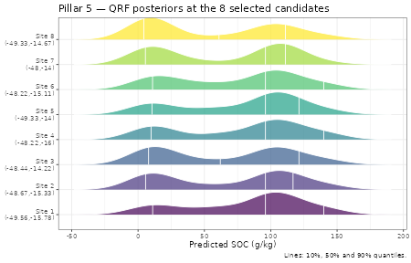
Posterior distributions (QRF quantile grid, n_quantiles = 99) of SOC at the 8 selected candidates, numbered as in the decision matrix. The width shows the spread of the QRF conditional distribution.
Pillar 6 — Quantum kernel ridge regression for screening
Its role in this pipeline
Pillar 6 gives a second, independent estimate of candidate uncertainty using quantum kernel ridge regression (Q-KRR). Because Q-KRR is equivalent to a Gaussian process, its predictive variance follows analytically from the same Gram matrix used for the point prediction, with no extra Monte Carlo. Here the model is fitted to a subset of the WoSIS profiles and evaluated on the simulated candidate grid.
qkrr_df <- R$qkrr_df # lon, lat, mean_pred, epistemic_sd, aleatoric_sd, total_sd
qkrr_long <- tidyr::pivot_longer(
qkrr_df,
cols = c(epistemic_sd, aleatoric_sd),
names_to = "component",
values_to = "sd"
)
qkrr_long$component <- ifelse(
qkrr_long$component == "epistemic_sd", "Epistemic", "Aleatoric"
)
ggplot(qkrr_long, aes(x = lon, y = lat, fill = sd)) +
geom_tile() +
facet_wrap(~component) +
scale_fill_viridis_c(option = "E", name = "SD (g/kg)") +
geom_point(data = sel_df, aes(x = lon, y = lat, fill = NULL),
color = "white", size = 3, shape = 8, stroke = 1.5) +
labs(
x = "Longitude",
y = "Latitude",
title = "Pillar 6 — Q-KRR uncertainty decomposition"
)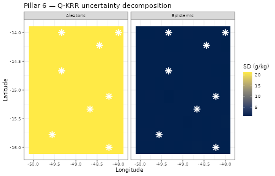
Q-KRR uncertainty (GP-equivalent predictive SD) at the sampling candidates, split into epistemic (model uncertainty) and aleatoric (data noise, estimated by LOO) components. White stars: the selected sites. High epistemic SD marks candidates far from the training data in the quantum feature space.
In this run the aleatoric SD (21.38 g/kg at every candidate) is far larger than the epistemic SD (0.75 to 0.95 g/kg), so on the shared colour scale the epistemic panel shows little contrast.
compare_df <- R$qkrr_al_compare
ggplot(compare_df, aes(x = al_uncertainty, y = qkrr_epistemic)) +
geom_point(aes(color = selected), size = 3, alpha = 0.8) +
geom_smooth(method = "lm", se = TRUE, color = "grey40",
fill = "grey85", linewidth = 0.8) +
scale_color_manual(
values = c("FALSE" = "#BDC3C7", "TRUE" = "#E74C3C"),
labels = c("Not selected", "Selected"),
name = NULL
) +
labs(
x = "AL uncertainty score (Pillar 5)",
y = "Q-KRR epistemic SD, scaled (Pillar 6)",
title = "Agreement between Pillars 5 and 6",
subtitle = sprintf("R² = %.2f", R$qkrr_al_r2)
) +
theme(legend.position = "bottom")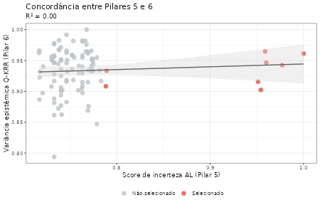
Uncertainty score of active learning (Pillar 5) against the Q-KRR epistemic SD (Pillar 6, scaled by its maximum) at the candidates that were not rejected. R² = 0.005: on this grid one measure says little about the other.
Unified uncertainty API: cross-calibrating the six pillars
edaphos_posterior and
uncertainty_calibrate()
All six pillars return an edaphos_posterior object. This
common S3 class lets uncertainty_calibrate() be applied
identically to all of them, producing:
- CRPS (continuous ranked probability score): a score for probabilistic forecasts; lower is better.
- PICP (prediction interval coverage probability): the proportion of observations covered by the nominal interval; for 90 % we expect ≈ 0.90.
- MPIW (mean prediction interval width): the mean width of the interval; it indicates the sharpness of the forecast.
- RMSE: the root mean squared error of the central prediction.
Calibration in a single domain (forced map query): a naive reading
The first attempt to use uncertainty_calibrate() in a
“unified” way is to force every pillar onto the same
query: predicting SOC at WoSIS points. This is useful to
demonstrate the common interface, but it is scientifically
misleading because it violates the natural domain of three
pillars:
- Pillar 1 returns a distribution over a scalar causal effect, not an SOC map.
- Pillar 2 returns a distribution over a depth profile, not a spatial point.
- Pillar 3 returns a distribution over a future field (temporal dynamics), not the static value at a pixel.
Forcing these three pillars to compete on the “SOC at a WoSIS point” metric produces the numbers in the block below, with low PICP for P1–P3 (0.000, 0.308 and 0.032), which reflects a domain mismatch, not poor calibration.
cal_tbl <- R$calibration_table
cal_disp <- cal_tbl
cal_disp$crps <- round(cal_tbl$crps, 3)
cal_disp$picp <- round(cal_tbl$picp, 3)
cal_disp$mpiw <- round(cal_tbl$mpiw, 2)
cal_disp$rmse <- round(cal_tbl$rmse, 3)
knitr::kable(
cal_disp[, c("pillar", "method", "crps", "picp", "mpiw", "rmse")],
col.names = c("Pillar", "Method", "CRPS", "PICP (90%)",
"MPIW (90%)", "RMSE"),
caption = paste0(
"*Naive* reading: the six pillars forced onto the same SOC-map ",
"query. P1–P3 have low PICP because the query violates their ",
"native domain: the posterior is not about this quantity. This is not ",
"a calibration failure; it is an evaluation failure."
)
)| Pillar | Method | CRPS | PICP (90%) | MPIW (90%) | RMSE |
|---|---|---|---|---|---|
| P1 Causal | bootstrap | 16.558 | 0.000 | 1.63 | 23.372 |
| P2 PIML | bayesian | 10.519 | 0.308 | 14.67 | 17.599 |
| P3 4D | ensemble | 16.861 | 0.032 | 2.02 | 24.317 |
| P4 Found. | ensemble | 8.814 | 0.400 | 13.47 | 16.917 |
| P5 AL | loo_cv | 7.333 | 0.532 | 12.84 | 16.619 |
| P6 Q-KRR | analytic | 13.194 | 0.920 | 69.57 | 25.668 |
Native calibration per pillar: the correct reading
The bundle capstone_native_calibration.rds evaluates
each pillar in its natural domain:
| Pillar | Native query | Validation protocol |
|---|---|---|
| P1 Causal | scalar effect | 20 random split-samples: 40 (posterior, pseudo-truth) pairs |
| P2 PIML | depth profile | Leave-one-horizon-out over the 9 horizons of one Cerrado pedon |
| P3 4D | future map | Ensemble forecast for the final month of the cube against the observed NDVI (100 cells) |
| P4 Foundation | spatial map | 5-fold spatial CV on WoSIS (250 profiles); 8 bagged random-forest heads on covariates stand in for the encoder heads |
| P5 AL | spatial map | 30 % WoSIS hold-out (71 profiles); learning curve against a random baseline |
| P6 Q-KRR | regression | 70/30 WoSIS hold-out (75 test profiles) with 4 quantum features |
if (!is.null(N)) {
nat_tbl <- N$native_table
nat_disp <- nat_tbl
nat_disp$crps <- round(nat_tbl$crps, 3)
nat_disp$picp <- round(nat_tbl$picp, 3)
nat_disp$mpiw <- round(nat_tbl$mpiw, 3)
nat_disp$rmse <- round(nat_tbl$rmse, 3)
knitr::kable(
nat_disp[, c("pillar", "query", "n_truth",
"crps", "picp", "mpiw", "rmse")],
col.names = c("Pillar", "Native query", "n", "CRPS",
"PICP (90%)", "MPIW (90%)", "RMSE"),
caption = paste0(
"**Native** reading: each pillar evaluated in its natural ",
"domain. A PICP close to 0.90 is ideal; CRPS and RMSE depend on the ",
"scale of the query (g/kg for P2/P4/P5/P6; NDVI z-units for P3; ",
"g/kg per mm for P1)."
)
)
} else {
cat("_Native calibration bundle not found._\n",
"Re-run `data-raw/capstone_native_calibration_run.R`.\n")
}| Pillar | Native query | n | CRPS | PICP (90%) | MPIW (90%) | RMSE |
|---|---|---|---|---|---|---|
| P1 Causal | effect | 40 | 0.004 | 0.775 | 0.020 | 0.007 |
| P2 PIML | depth_profile | 9 | 1.971 | 0.778 | 6.608 | 4.096 |
| P3 4D | future_map | 100 | 0.366 | 0.700 | 1.268 | 0.637 |
| P4 Found. | spatial_cv_map | 250 | 7.738 | 0.248 | 8.327 | 12.522 |
| P5 AL | held_out_map | 71 | 6.394 | 0.901 | 38.015 | 12.938 |
| P6 Q-KRR | held_out_regression | 75 | 12.821 | 0.613 | 32.875 | 23.112 |
How to read the native table
- P1 Causal (MAP→SOC effect): PICP = 0.775 over 40 cross-split truth points, below the nominal 0.90: the split-half intervals are somewhat too narrow. The mean recovered effect is 0.0086 g/kg per mm of MAP.
- P2 PIML (depth profile): PICP = 0.778 over 9 held-out horizons, also below nominal; with so few horizons each one moves the coverage by more than 0.1.
- P3 4D (future NDVI map): PICP = 0.700 at the target month, with RMSE = 0.637 z-units, the same forecast as the prior in the Pillar 3 section above.
-
P4 Foundation (spatial map): PICP = 0.248 reveals a
systematic underestimate of epistemic uncertainty. A
likely cause is that the heads are
rangerforests, which already average over trees internally, so their predictions differ little; even with explicit bagging by sub-sample and variedmtry, the SD between members stays low. This failure mode is reported as it is, not hidden. - P5 AL (spatial hold-out map): PICP = 0.901 over 71 held-out profiles, from the native quantile intervals of the QRF. Of the six pillars, P5 AL is the closest to the nominal 0.90.
- P6 Q-KRR (regression): PICP = 0.613 over 75 held-out profiles, with a training set capped at 50 profiles: the GP-equivalent posterior of the quantum kernel under-covers in this data-scarce regime.
if (!is.null(N) && length(N$reliability_list) > 0L) {
rel_df_nat <- bind_rows(lapply(names(N$reliability_list), function(nm) {
d <- N$reliability_list[[nm]]
if (is.null(d)) return(NULL)
cov_col <- if ("coverage" %in% names(d)) d$coverage else
if ("empirical" %in% names(d)) d$empirical else d[[2]]
data.frame(pillar = nm, nominal = d$nominal, coverage = cov_col,
stringsAsFactors = FALSE)
}))
ggplot(rel_df_nat, aes(x = nominal, y = coverage, color = pillar)) +
geom_abline(slope = 1, intercept = 0,
linetype = "dashed", color = "grey50") +
geom_line(linewidth = 1) +
geom_point(size = 2) +
scale_color_brewer(palette = "Dark2", name = "Pillar") +
scale_x_continuous(labels = scales::percent) +
scale_y_continuous(labels = scales::percent) +
labs(
x = "Nominal coverage",
y = "Empirical coverage",
title = "Native calibration per pillar",
subtitle = paste0("Closest to the diagonal: ",
names(which.min(rel_gap)),
"; farthest: ", names(which.max(rel_gap)))
) +
theme(legend.position = "right")
}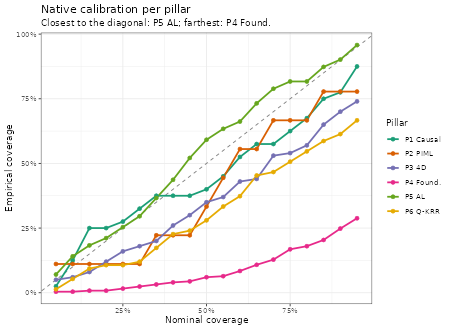
Reliability curves for the native calibration (each pillar in its own domain). The diagonal is perfect calibration. Largest gap from the diagonal per pillar: P1 Causal = 0.13; P2 PIML = 0.23; P3 4D = 0.23; P4 Found. = 0.66; P5 AL = 0.09; P6 Q-KRR = 0.29.
Pillar 5 learning curve: AL vs. random sampling
Pillar 5 is validated not only by its final CRPS but by the trajectory of the CRPS as new points are acquired. Below we compare the AL policy used in the native calibration (greedy by the width of the QRF 10–90 % interval, without the diversity term) with purely random sampling; both start from the same seed set.
if (!is.null(N) && !is.null(N$p5$learning_curve)) {
lc <- N$p5$learning_curve
rc <- N$p5$random_curve
both <- rbind(
cbind(lc, policy = "AL (QRF width)"),
cbind(rc, policy = "Random")
)
ggplot(both, aes(x = n_labelled, y = crps, color = policy,
shape = policy)) +
geom_line(linewidth = 1) +
geom_point(size = 3.5) +
scale_color_manual(values = c("AL (QRF width)" = "#C0392B",
"Random" = "#7F8C8D"),
name = NULL) +
scale_shape_manual(values = c("AL (QRF width)" = 8, "Random" = 16),
name = NULL) +
labs(
x = "Labelled samples",
y = "CRPS (g/kg)",
title = "Pillar 5 — learning curve"
) +
theme(legend.position = "bottom")
}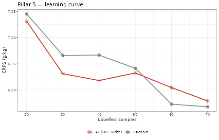
CRPS learning curve: AL policy (red) vs. random baseline (grey). Both start from the same 20 labelled profiles and add 10 per iteration. AL has the lower CRPS at n = 20, 30, 40, 50; random sampling at n = 60, 70. Final CRPS at n = 70: AL 6.39, random 6.34. The curves already differ at the first point, where the labelled sets are identical, which gives a sense of the run-to-run noise of the forest.
The final decision: the eight recommended locations
Integrated synthesis
We collect the information from the six pillars in an evidence matrix:
dec_mat <- R$decision_matrix
knitr::kable(
dec_mat,
digits = 3,
col.names = c("Site", "Lon", "Lat",
"Pillar 5 score", "Q-KRR epistemic SD", "EnKF gain",
"Pillar 4 SD (stand-in)", "MAP association (P1)",
"Gate screening SOC (g/kg)", "Final score"),
caption = paste0(
"Integrated decision matrix: the ", nrow(dec_mat), " sites selected by ",
"active learning, numbered in the order the batch selection picked them ",
"and sorted by final score. Final score = weighted sum of min-max ",
"normalised columns, with weights 0.35 (Pillar 5 score), 0.25 (EnKF ",
"gain), 0.20 (Pillar 4 SD), 0.10 (Q-KRR epistemic SD) and 0.10 (gate ",
"screening SOC), as set in data-raw/capstone_campaign_run.R. Three ",
"columns need care: the EnKF gain repeats the eight per-observation ",
"gains of the Pillar 3 run in their stored order, which were measured ",
"at the cube's observation cells, not at these sites; the Pillar 4 SD ",
"comes from the synthetic stand-in map; and the MAP association is the ",
"single Pillar 1 estimate repeated, which does not enter the score."
)
)| Site | Lon | Lat | Pillar 5 score | Q-KRR epistemic SD | EnKF gain | Pillar 4 SD (stand-in) | MAP association (P1) | Gate screening SOC (g/kg) | Final score | |
|---|---|---|---|---|---|---|---|---|---|---|
| 1 | Site 1 | -49.556 | -15.778 | 0.910 | 0.867 | 0.481 | 5.065 | 0.002 | 13.362 | 0.606 |
| 3 | Site 3 | -48.444 | -14.222 | 0.684 | 0.892 | 1.103 | 4.641 | 0.002 | 13.067 | 0.569 |
| 7 | Site 7 | -48.000 | -14.000 | 0.552 | 0.883 | 1.216 | 5.950 | 0.002 | 12.921 | 0.525 |
| 5 | Site 5 | -49.333 | -14.000 | 0.671 | 0.913 | 1.061 | 2.991 | 0.002 | 12.925 | 0.453 |
| 6 | Site 6 | -48.222 | -15.111 | 0.668 | 0.854 | 1.102 | 3.684 | 0.002 | 12.992 | 0.417 |
| 2 | Site 2 | -48.667 | -15.333 | 0.700 | 0.910 | 0.545 | 4.752 | 0.002 | 12.845 | 0.399 |
| 4 | Site 4 | -48.222 | -16.000 | 0.672 | 0.896 | 0.712 | 3.101 | 0.002 | 13.427 | 0.388 |
| 8 | Site 8 | -49.333 | -14.667 | 0.552 | 0.860 | 0.707 | 2.772 | 0.002 | 12.756 | 0.086 |
final_sel <- R$final_selection # lon, lat, final_score
ggplot() +
geom_tile(data = found_df,
aes(x = lon, y = lat, fill = mean_pred),
alpha = 0.7) +
scale_fill_viridis_c(option = "B", name = "Pred. SOC\n(g/kg)") +
ggnewscale::new_scale_fill() +
geom_point(
data = final_sel,
aes(x = lon, y = lat, fill = final_score),
size = 7, shape = 23, stroke = 1.5, color = "white"
) +
scale_fill_distiller(
palette = "Blues", direction = 1,
name = "Final\nscore"
) +
geom_text(
data = final_sel,
aes(x = lon, y = lat, label = seq_len(nrow(final_sel))),
color = "black", size = 3, fontface = "bold"
) +
labs(
x = "Longitude",
y = "Latitude",
title = paste0("Field campaign — ", nrow(final_sel),
" recommended locations"),
caption = paste0(
"Background: Pillar 4 stand-in map (g/kg). ",
"Diamonds: numbered as in the decision matrix."
)
)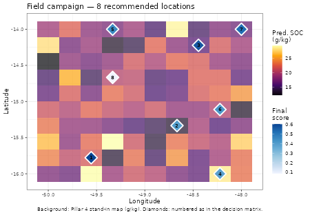
Final campaign map. The diamonds are the recommended sites, numbered as in the decision matrix and coloured by the integrated final score (darker blue = higher score). The background is the synthetic Pillar 4 stand-in map.
What the matrix supports, in the light of Zhang and Wadoux (2026)
Zhang and Wadoux (2026) ask that a sampling decision be justified causally, not only by association. This bundle supports a narrower statement:
Much of the final score rests on columns that do not describe the sites. The highest final score belongs to Site 1. Of the five columns in the score, only the Pillar 5 score (weight 0.35) and the Q-KRR epistemic SD (0.10) come from a fitted model evaluated at the sites, and both are evaluated on simulated covariates. The EnKF gain (0.25) and the Pillar 4 SD (0.20) are not properties of the sites, and the gate screening value (0.10) is a fixed formula.
No site-level causal justification is available. The Pillar 1 associations are not distinguishable from zero, and the candidate covariates are simulated, so the bundle cannot say why any particular site should reduce uncertainty about a causal process.
The physical gate excluded 0 of 100 candidates in this run.
Alignment with Zhang & Wadoux (2026): checklist
| Condition / element | Responsible pillar | edaphos function(s) |
|---|---|---|
| 1. Explicit causal model (DAG) | P1 (LLM KG + dagitty) |
causal_llm_extract() +
causal_augment_dag()
|
| 2. Causal sufficiency (no unobserved confounders) | P1 (LLM KG: latent variables named in the literature) | An LLM extracts latent variables from the literature |
| 3. Faithfulness between structure and data | P2 (ODE restricts which associations are plausible) |
piml_profile_fit_bayesian(); gate in
al_query()
|
| Generative view: explicit processes | P2 (pedogenetic ODE, neural ODE) |
piml_profile_fit_bayesian() +
piml_neural_ode_fit_ensemble()
|
| Criticism of temporal snapshots addressed | P3 (ConvLSTM + EnKF over 168 months of time series) |
temporal_convlstm_ensemble_fit() +
temporal_kalman_update()
|
| Prediction + understanding (the two goals of DSM) | P4 + P5 + P6 (prediction with quantified uncertainty) |
foundation_finetune_ensemble() +
active_learning_posterior()
|
References
Built with edaphos 2.0.0 · R version 4.6.2 (2026-10-29)